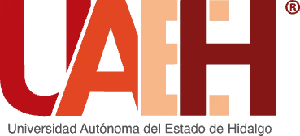
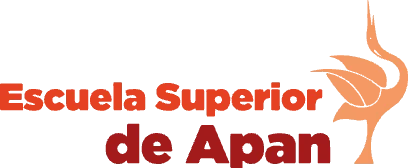
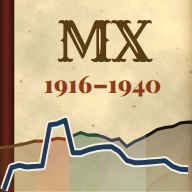

LIEF · Primer semestre
Licenciatura en Ingeniería Económica y Financiera

Principios de EconomíaMampara 1916México, 1916–1940: el PIB y la deuda externa en una línea de tiempo con 28 hojas que se despliegan.
Abrir el libro →